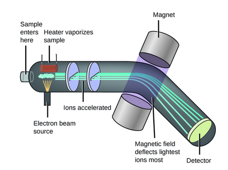

Phương pháp phổ khối lượng

Image source: Topic 3 image sources
| Vietnamese | Phương pháp phổ khối lượng / Phổ khối lượng |
|---|---|
| English | Mass spectrometry (MS) |
| Pronunciation | /mæs spɛkˈtrɑːmətri/ or /mæs spekˈtrɑːmətri/ |
| Word type | Danh từ (Noun) |
Meaning (Vietnamese)
Phương pháp phân tích dùng để xác định khối lượng phân tử và cấu trúc bằng tỷ lệ m/z.
Meaning (English)
An analytical method used to determine molecular mass and structure by measuring mass-to-charge ratio (m/z).
Example
Mass spectrometry helps identify unknown compounds.
Phương pháp phổ khối lượng giúp xác định các hợp chất chưa biết.
Another definition from the notes
Phương pháp phổ khối lượng
An analytical technique used to measure the mass-to-charge ratios of ions.
Another definition from the notes
Kĩ thuật phân tích dùng để đo tỉ số khối lượng trên điện tích của các ion.
An analytical technique used to measure the mass-to-charge ratios of ions.
Another definition from the notes
Used to determine molar mass and molecular fragments (mảnh ion).
Source of information: Topic 3 notes (see Sources)